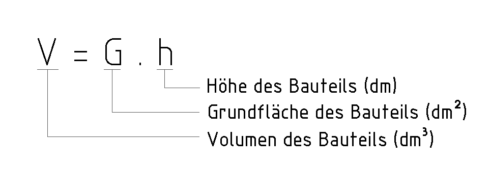
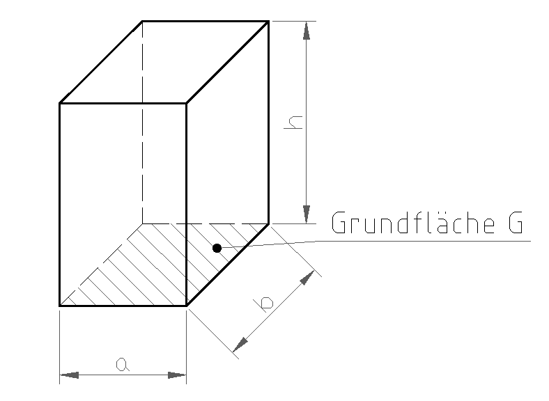

2 Prisma
Zuerst die Pflicht-Aufgaben (★, ★★). Die Extra-Aufgabe (★★★) am Ende ist freiwillig.
Tippe in die Kästchen. Dann tippe auf „Prüfen“.
Grün = richtig, Rot = schau noch einmal.
Die Volumen-Formel

V = G · h
V = Volumen (z. B. dm³)
G = Grundfläche, die Fläche unten (z. B. dm²)
h = Höhe (z. B. dm)
Bei einer Rechnung immer die gleichen Einheiten verwenden! Zuerst umrechnen, dann rechnen.
Längen umrechnen
m → dm → cm → mm
Eine Stufe nach rechts: · 10. Eine Stufe nach links: : 10.
Beispiel: 3718 mm = 371,8 cm = 37,18 dm 0,032 m = 0,32 dm
Prisma
Ein Prisma ist ein Körper wie eine Schachtel. Die Grundfläche ist ein Rechteck.

Grundfläche: G = a · b
Volumen: V = G · h
Umgeformt: a = G : b und h = V : G
Beispiel: a = 3 cm, b = 0,1 dm = 1 cm, h = 40 mm = 4 cm
V = 3 · 1 · 4 = 12 cm³
Nimm den Taschenrechner. Runde auf 2 Kommastellen (mehr Stellen gehen auch).
Aufgabe 1 ★
Prisma: Berechne die Grundfläche G und das Volumen V.
| a = 1,2 m, b = 3,9 m, h = 2,6 m | |
| G = | m² |
| V = | m³ |
Aufgabe 2 ★★
Prisma: G = 5,6 m², b = 2,3 m, V = 7,8 m³. Berechne die Seite a und die Höhe h.
Umgeformt: a = G : b und h = V : G
| a = | m |
| h = | m |
Extra: Wenn du noch Zeit hast ★★★
Pflicht geschafft! Du darfst hier aufhören.
Diese Aufgabe ist freiwillig. Hier wechseln die Einheiten oft.
Aufgabe 3 ★★★
Prisma: Berechne, was fehlt. Achte auf die Einheiten!
Prisma 2: 918 mm² = 9,18 cm². Prisma 3: alles zuerst in dm umrechnen.
| Prisma 2 | |
|---|---|
| a | 37 cm |
| b | mm |
| G | 918 mm² |
| h | 3,7 cm |
| V | cm³ |
| Prisma 3 | |
|---|---|
| a | 3718 mm |
| b | 28 dm |
| G | dm² |
| h | 0,032 m |
| V | dm³ |